Radiator Mounting Bracket
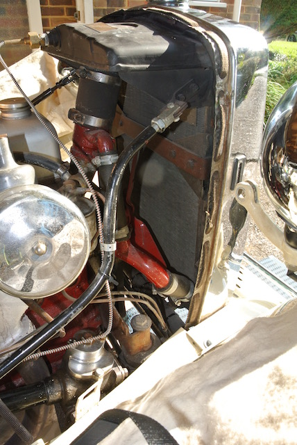I had noticed that the bracket at the bottom of the radiator (as seen through the grill) was rusty! So on Saturday 22nd August (the day of the Soreham Airshow crash) I started the dismantling process by removing the bonnet. Over the next few days I removed the radiator shell and the radiator, complete with rusty mounting bracket. To remove the shell it was necessary to remove the engineering screws that bolt it to the radiator and the short pieces that join the wing stay (that holds the headlamp) to the tie-bracket that is bolted to the back of the radiator. The first photo shows the radiator after these have been removed. Note that the slotted heads of the machine screws are beneath the tape that is threaded around the radiator shell.
 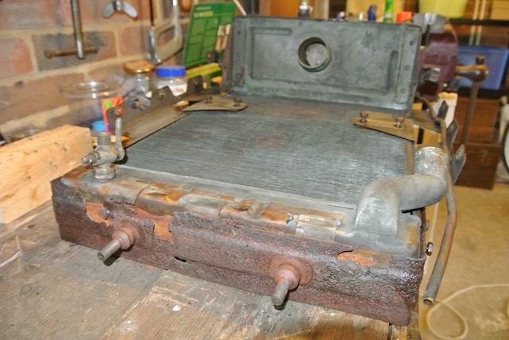The next two photos show the bracket before removing the radiator and when it was on the bench. It was not in a good state, with some of the U-shaped brackets that fit around the bottom of the radiator rusted through. In fact only one was complete! However, I decided to try to save it by cleaning it of rust and painting it. For some reason, the bracket is bolted to the side of the radiator, but the U-shaped brackets are soldered to it. However, only one side of the complete bracket was still soldered in place and so I was able to gently remove it by using a blowlamp.
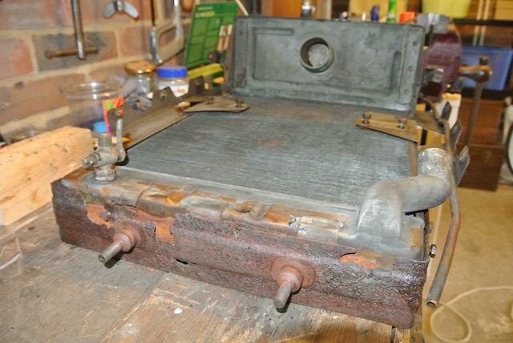The next two photos show the bracket before removing the radiator and when it was on the bench. It was not in a good state, with some of the U-shaped brackets that fit around the bottom of the radiator rusted through. In fact only one was complete! However, I decided to try to save it by cleaning it of rust and painting it. For some reason, the bracket is bolted to the side of the radiator, but the U-shaped brackets are soldered to it. However, only one side of the complete bracket was still soldered in place and so I was able to gently remove it by using a blowlamp.
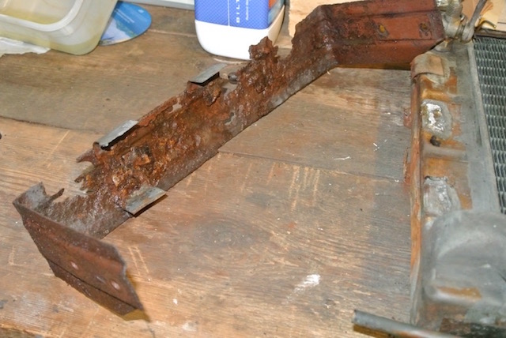 These photos show the mounting bracket before and after rust removal. I used a substance called deox-C, which is crystaline and mixed with warm water. You leave rusty items soaking in it for 24 hours, giving the item a brush with an old toothbrush part way through and at the end. I followed this with two coats of black Hammerite and then bolted it to the radiator, without soldering the U-shaped brackets. It seemed perfectly secure like this.
These photos show the mounting bracket before and after rust removal. I used a substance called deox-C, which is crystaline and mixed with warm water. You leave rusty items soaking in it for 24 hours, giving the item a brush with an old toothbrush part way through and at the end. I followed this with two coats of black Hammerite and then bolted it to the radiator, without soldering the U-shaped brackets. It seemed perfectly secure like this.
I had bought a radiator mounting kit from the Octagon Club. The kit contained four rubber doughnuts and four steel rings that fit around the doughnuts, presumably to stop them expanding too much. The only diagram that I could find (on the Moss Europe web site) indicated that one doughnut should be fitted above the chassis bracket and one below. However, I found that the radiator had been fitted with both doughnuts above the chassis bracket and another peice of rubber beneath the bracket.
This photo shows the parts as originally fitted to the car. The second photo shows the radiator installed in its original configuration, with both doughnuts above the chassis bracket and the original rubbers below. Note that I have painted the steel rings around the rubber noughnuts.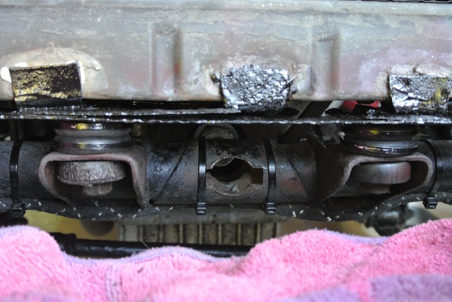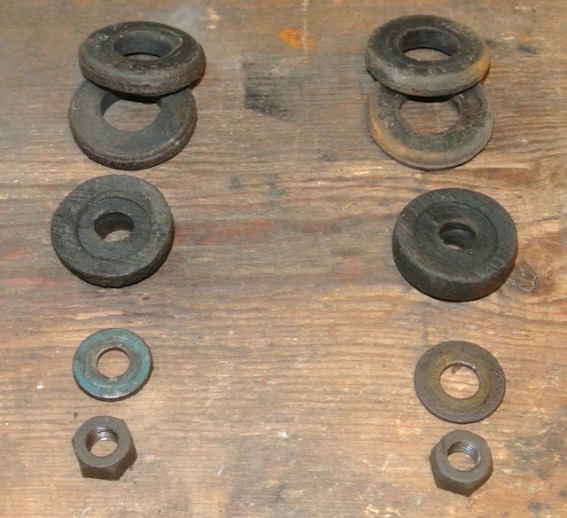 However, apart from not seeming to be the right way to install the radiator, this resulted in problems with the alignment of the wing stays and the connecting bracket across the rear of the radiator. I could just not get them to line up so that they could be bolted together.
So I fitted the doughnuts as I think they should be, one above and one below the chassis bracket. My concern was that the top front of the bonnet, which bolts to the radiator shell, would now be lower than it had been and so might not fit. I also found that I needed to drop the radiator into the top hose, which can be seen in the first photo, as I installed it. Replacing the top hose will be very difficult unless the new hose is very flexible.
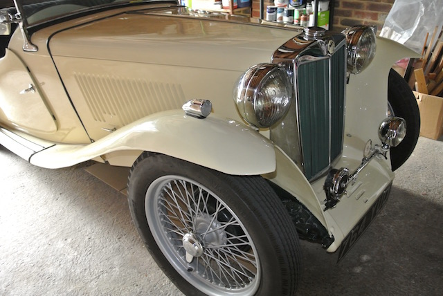Although the wing stays were easier to fit, I still needed to slacken all fixings (including where the stays are bolted through the wings) and push the top of the radiator forward so as to make room for the bonnet between the scuttle and the radiator. Essentially the radiator stays are taking the strain. I had noticed that the screws holding the bonnet fixing to the scuttle top rail were loose. The wood had already been drilled out and dowels fitted, one of which was loose. So I cleaned it and glued it back in place and glued slivers of wood into the screw holes. Following the bonnet-fitting guide on 'The Original TD Midget' site, I removed a piece of the rubber strip around the scuttle so that the bonnet fixing screwed directly on to the wood. Much to my surprise, the bonnet fitted well, as can be seen in the final photo of this section.
Go to topEngine Mounts
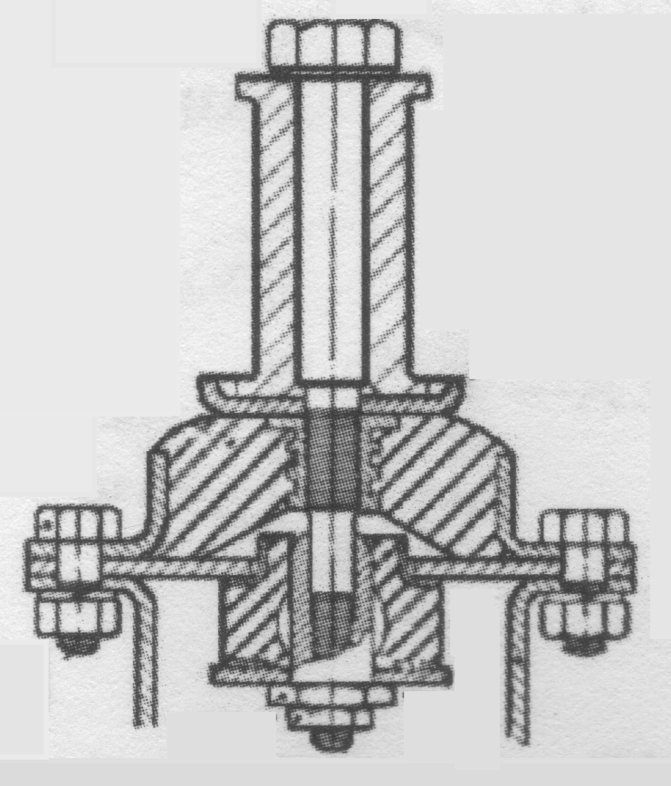Whilst the radiator was removed I decided to replace the engine mounts. Not only were they easily accessible, but the rubber parts were more cracked than I had thought. I also discovered that the size of the main bolt heads were different from one side to the other and that the top cup-shaped washer was missing on both sides. So I decided to buy the complete set of parts from the Octagon Club and replace the lot. The diagram ('stolen' from the NTG catalogue) shows the component parts. Note that the upper rubber has a threaded insert and that the bottom sleeve-nut passes through the lower rubber.
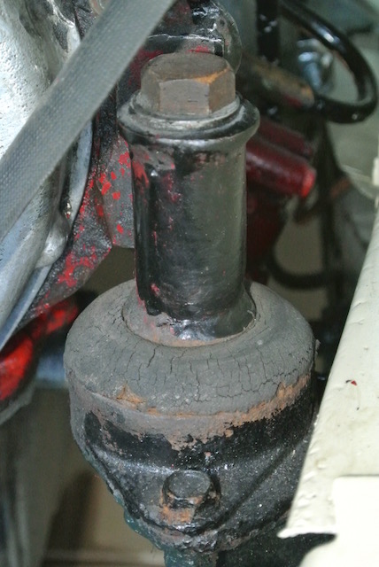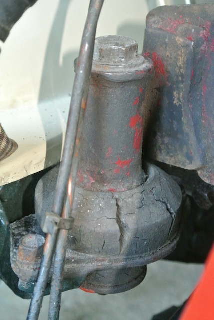You can see from these two photos the condition of the original mounts. Apart from being different on each side and having the top cup-washer missing, one was quite badly cracked. the parts of a new mount can be seen in the photo.
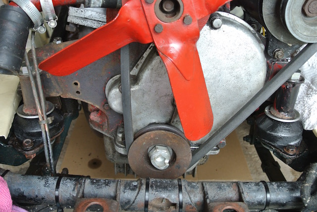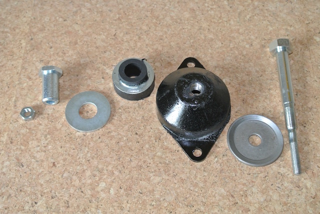Using a plank of wood, to spread the load, and a bottle jack (which looks as though it could be the original supplied with the car) I was able to lift the engine off the mounts. It was then surprisingly easy to remove the old mounts and insert the new ones. Of course, access was much easier by not having the radiator in the way.
I have to admit that I didn't really know how far to tighten the sleeve-nut. When I asked a TA owner about torques he said "you just tighten things tight enough"! The final photo shows the new engine mounts in place, before I re-fitted the radiator. I got everything back together on Sunday 20th September and took the car for a short run. I've since driven the car over 20 miles and all seems fine. However, I will check the tightness of the sleeve-nuts at some point.
© David James 2017 Last updated: 21st October 2017